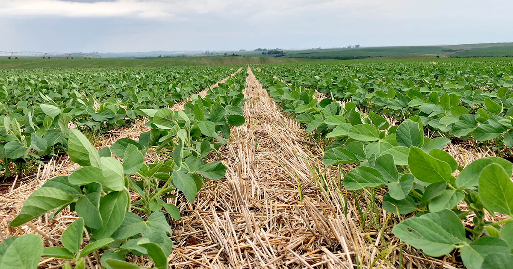
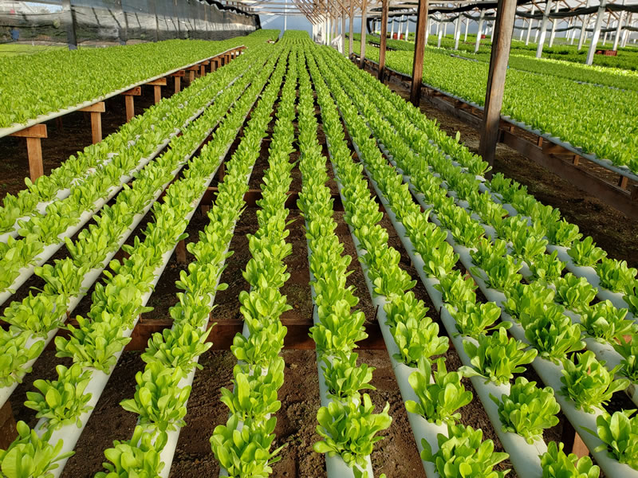
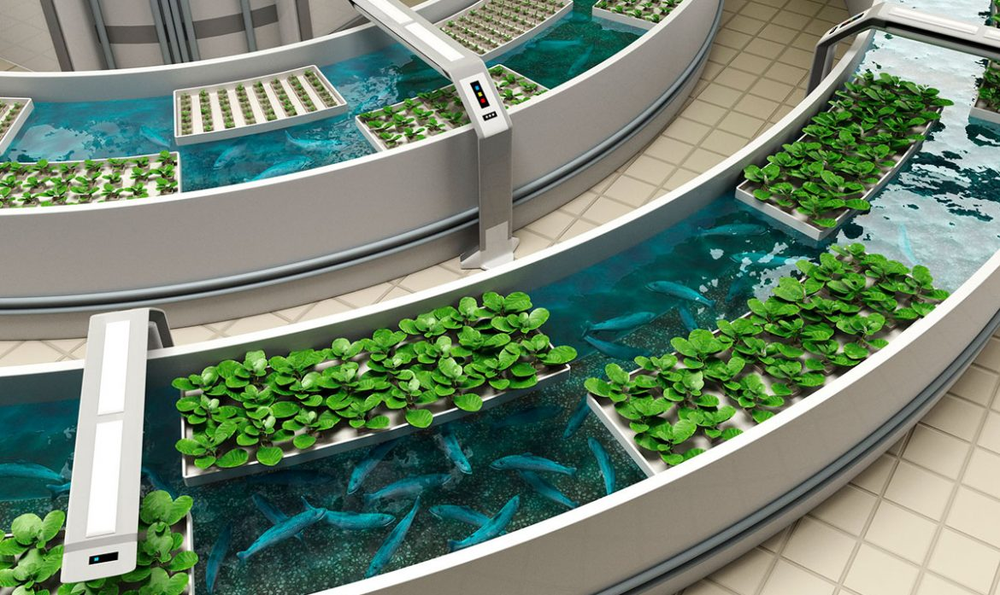
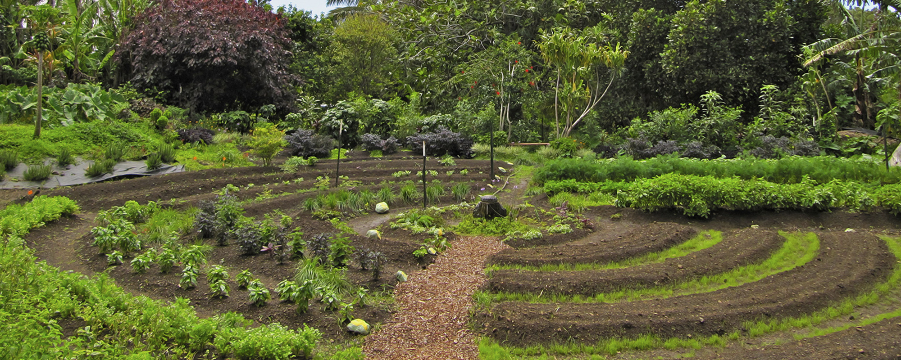
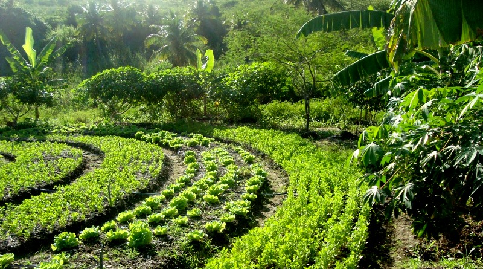

Modelos de Cultivo Eficientes: Maximizando Recursos e Produtividade
Agricultura de Conservação
A agricultura de conservação é um modelo de cultivo que se concentra na minimização do revolvimento do solo, na cobertura vegetal constante e na diversificação de culturas. Essas práticas ajudam a preservar a estrutura do solo, reduzir a erosão e melhorar a retenção de água e nutrientes. Além disso, a rotação de culturas e a integração de culturas de cobertura podem contribuir para o controle de pragas e doenças, reduzindo a dependência de agroquímicos. A agricultura de conservação é conhecida por aumentar a eficiência no uso de recursos, como água e energia, e melhorar a produtividade ao longo do tempo.
Hidroponia
A hidroponia é um sistema de cultivo sem solo em que as plantas são cultivadas em soluções nutritivas, em vez de solo tradicional. Nesse modelo, as plantas recebem os nutrientes diretamente na água, permitindo um uso mais eficiente dos nutrientes e da água disponível. Além disso, a hidroponia elimina os problemas relacionados ao controle de ervas daninhas e doenças transmitidas pelo solo. Como as condições podem ser controladas com precisão, a hidroponia geralmente resulta em uma produtividade mais alta em comparação com os métodos de cultivo convencionais.
Aquaponia
A aquaponia é um sistema integrado que combina a criação de peixes em tanques com o cultivo de plantas em água reciclada. Nesse modelo, os resíduos dos peixes fornecem nutrientes para as plantas, que, por sua vez, filtram a água para retornar limpa aos tanques dos peixes. Esse ciclo fechado permite um uso mais eficiente da água e dos nutrientes, além de reduzir a necessidade de fertilizantes químicos. A aquaponia é conhecida por sua alta produtividade e baixo consumo de água em comparação com os sistemas de cultivo convencionais.
Permacultura
A permacultura é um modelo de cultivo que busca criar sistemas agrícolas sustentáveis, imitando os padrões encontrados na natureza. Nesse modelo, as plantas são cultivadas em harmonia com o ambiente circundante, promovendo a biodiversidade e maximizando a interação benéfica entre os elementos do sistema. A permacultura utiliza técnicas como a plantação em camadas, rotação de culturas, compostagem e utilização de plantas de cobertura para melhorar a fertilidade do solo e aumentar a eficiência no uso de recursos. Esse modelo visa criar sistemas agrícolas resilientes, capazes de produzir alimentos de forma sustentável a longo prazo.
Agrofloresta
A agrofloresta é um sistema agrícola que combina o cultivo de árvores, arbustos, culturas alimentares e, às vezes, animais em uma mesma área. Nesse modelo, diferentes espécies são plantadas juntas, imitando a estrutura de uma floresta natural. Essa diversidade de plantas permite o aproveitamento máximo dos recursos disponíveis, aumentando a produtividade e melhorando a resiliência do sistema. A agrofloresta também promove a conservação do solo, proteção da biodiversidade e regulação do microclima. Esse modelo de cultivo eficiente é capaz de fornecer alimentos, madeira e outros produtos úteis de forma sustentável e integrada.
